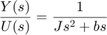
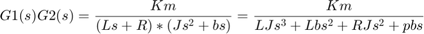
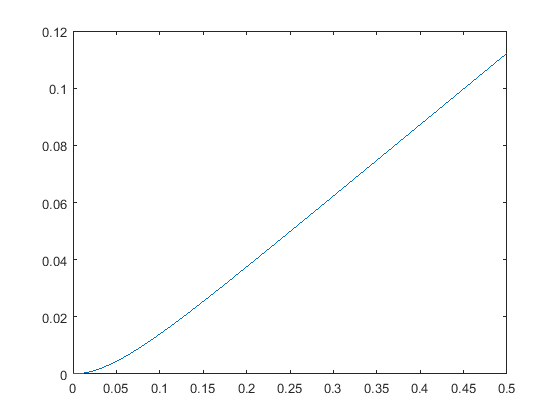
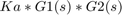
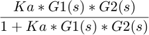
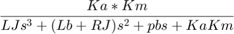
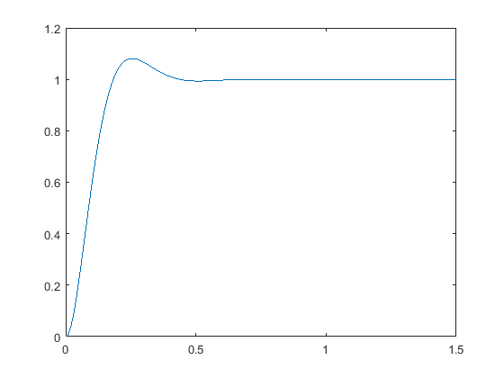
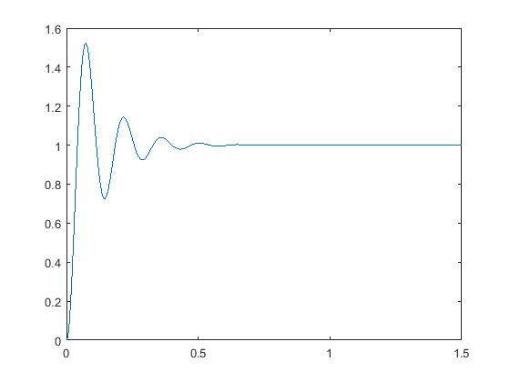
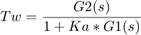
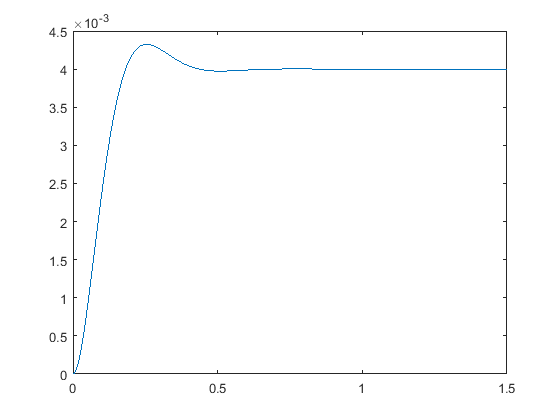

Hard Disk Design
Contents
Task 1
The differential equation of input voltage and head position is given, so it is pretty easy to get the open loop transfer function by taking the lapalce transform of both side and can easily get

Task 2
open loop transfer function is given by multiplying both G1 and G2

s = tf('s');
J = 1;
b = 20;
R = 1;
L = 0.001;
Km = 5;
G1 = Km/(L*s+R)
G2 = 1/(J*s^2+b*s)
openTF = G1*G2
t=[0:0.005:0.5];
y = step(openTF,t);
plot(t,y);
G1 =
5
-----------
0.001 s + 1
Continuous-time transfer function.
G2 =
1
----------
s^2 + 20 s
Continuous-time transfer function.
openTF =
5
---------------------------
0.001 s^3 + 1.02 s^2 + 20 s
Continuous-time transfer function.
 You can see that if a constant voltage is applied, then the read head will moves in a constant speed. And at the begining when the voltage is applied, there is a curve, which indicates that the read head is accelerating under applied voltage.
Task 3a
The proportional compensator is applied, so that the open loop transfer function is given by

and closed loop transfer function is given by

after plug in G1(s)G2(s) from previous computation, we have

Try plugging in Ka = 50, we can get the following plot
Ka = 50; t=[0:0.005:1.5]; ProportionalTF = (Ka*G1*G2)/(1+Ka*G1*G2) y = step(ProportionalTF, t); plot(t,y);
ProportionalTF =
0.25 s^3 + 255 s^2 + 5000 s
-----------------------------------------------------------------
1e-06 s^6 + 0.00204 s^5 + 1.08 s^4 + 41.05 s^3 + 655 s^2 + 5000 s
Continuous-time transfer function.
 Then applied step when Ka = 400
Ka = 400; ProportionalTF = (Ka*openTF)/(1+Ka*openTF) y = step(ProportionalTF, t); plot(t,y);
ProportionalTF =
2 s^3 + 2040 s^2 + 40000 s
------------------------------------------------------------------
1e-06 s^6 + 0.00204 s^5 + 1.08 s^4 + 42.8 s^3 + 2440 s^2 + 40000 s
Continuous-time transfer function.
 Clearly you can see that the Ka=50 has less over shoot than Ka=400 does. This is because for Ka=400, the feedback amplification is too big and make system too sensitive.
Task 3b
So when disturbance is Introduced to the system, the disturbance input flows into system between G1 and G2. So that we can derive the transfer function for disturbance:

First plot the response of disturbance in case of ka = 50
Ka = 50; Tw = G2/(1+Ka*G1*G2) y = step(Tw, t); plot(t,y);
Tw =
0.001 s^3 + 1.02 s^2 + 20 s
--------------------------------------------------
0.001 s^5 + 1.04 s^4 + 40.4 s^3 + 650 s^2 + 5000 s
Continuous-time transfer function.
